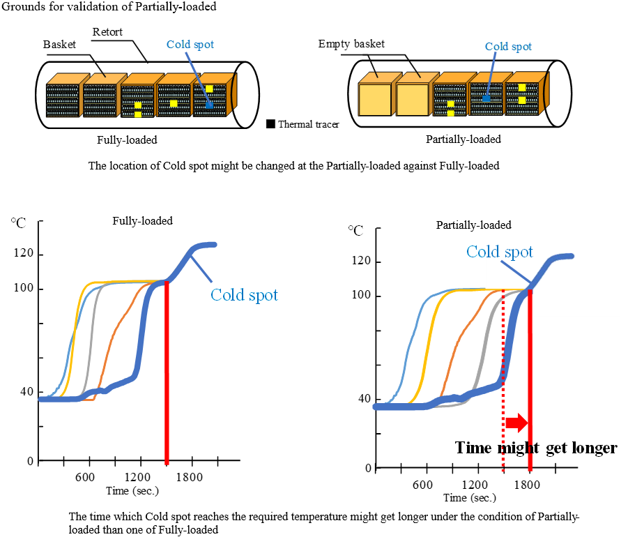
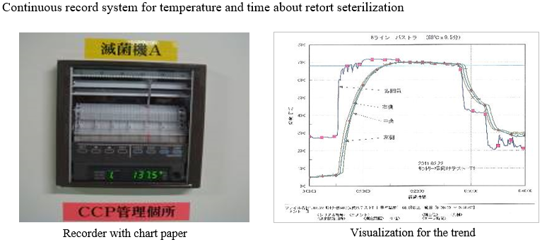
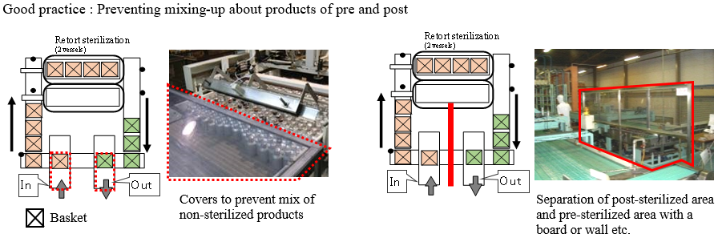

| Defect mode | Microbe contamination / Organoleptic defect |
| Subjected packaging | All packaging |
| Subjected line | Retort |
◆Use a thermo tracer to verify that the heat history at cold spots meets the predetermined sterilization conditions both when retort is partially-loaded and fully-loaded. (See the figure.) |
||
◆Indicate the sterilization conditions for each product on the shop floor (make them noticeable by anyone). |
||
◆When using different sterilization parameters for partially-loaded and fully-loaded environments, indicate current parameters on site, securely separate the products of different parameters, and record the changes. |
||
◆If manual retort sterilization is allowed, the procedure must be clearly documented and performed under the instructions from the supervisor. |
||
◆The temperature inside a retort and sterilization time must be continuously monitored. (See the figure.) |
||
◆Make sure that sterilization has been conducted for each basket. (See the figure.) |
||
Task 1 |
||
| Procedure | Attach a temperature measuring tape for each basket, make sure that the target temperature has been reached, and record it. Otherwise, confirm water puddles on the top of sterilized products and record it. | |
| Frequency or timing | Each basket | |
| Operating limit or standard condition | The temperature of the temperature measuring tape must reach the sterilization temperature, or there must be water puddles on the top of sterilized products. | |
| Task 2 |
 |
|
| Procedure | Always record and check the sterilization temperature, pressure, and time in the continuous record chart. | |
| Frequency or timing | Always | |
| Operating limit or standard condition | The sterilization conditions must be met. | |
| Task 3 |
||
| Procedure | Calibrate the instruments for retort sterilization (thermometer, manometer, etc.). | |
| Frequency or timing | External calibration: At least once a year. And at the frequency set by the laws and regulations Internal calibration: Every maintenance day |
|
| Operating limit or standard condition | Within the standard value range | |
| Task 4 | ||
| Procedure | Use a thermo trace to measure the temperature history at cold spots. | |
| Frequency or timing | At least once a year | |
| Operating limit or standard condition | The predetermined sterilization conditions must be met. | |
|

|
|

|

|
| Defect mode | Microbe contamination / Organoleptic defect / Shipping non-conforming products or test sample |
| Subjected packaging | All packaging |
| Subjected line | Retort |
◆Clearly separate the conveyors for products between before and after sterilization. |
||
◆To prevent workers from accidentally mixing unsterilized products in sterilized products, install covers around conveyors before and after sterilization. (See the figure.) |
||
◆The handling procedure must be set for the equipment and products when a sterilization process abnormality occurs (power failure, etc.). |
|
|
◆Record the number of baskets that go in and out of retort so that they can be traced when an abnormality is found. |
||
| Task 1 |
||
| Procedure | Clearly isolate unsterilized products from others when an abnormality occurs and record the quantity. | |
| Frequency or timing | When a retort sterilization abnormality occurs | |
| Operating limit or standard condition | Unsterilized products must be isolated. | |
|

|
| Defect mode | Microbe contamination |
| Subjected packaging | All packaging |
| Subjected line | Retort |
◆The allowable retention time and liquid temperature specified for each content must be observed. |
||
・Measure the retention time from filling before retort sterilization. |
||
| Task 1 |
||
| Procedure | Dispose of all products that exceeded the allowable retention time. | |
| Frequency or timing | When exceeding the allowable retention time (Example: Remaining for at least three hours after filling) | |
| Operating limit or standard condition | All the target products must be securely disposed of. | |
| Defect mode | Sealing defect / Packaging appearance defect |
| Subjected packaging | All packaging |
| Subjected line | Retort |
◆Set the standards for the chlorine concentration of cooling water to prevent microbe growth (Recommend: 0.1 ppm or above). |
||
◆For canned products, set the upper limit of the chlorine concentration of cooling water to prevent can lid corrosion due to highly concentrated chlorine (Recommendation: 10 ppm or below). |
||
◆Use process water (water that may enter products) as cooling water. For the requirements, see 1.3.4.1 "General requirement for water treatment". |
||
| Task 1 |
||
| Procedure | Periodically change cooling water and clean inside the equipment. | |
| Frequency or timing | Set locally (Example: Every maintenance day) | |
| Operating limit or standard condition | The water must be appropriately changed and cleaned. | |